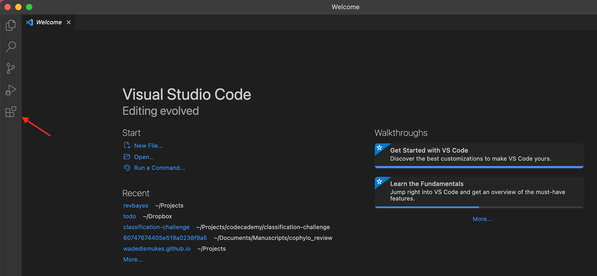
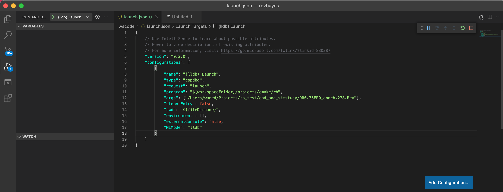

Visual Studio Code (or VSCode) is an open-source text editor by Microsoft. You can download and install it here.
You will first need to install RevBayes from source. Once RevBayes is installed (i.e. once you have successfully ran ./build.sh), open VSCode. Once VSCode is open you will need to select the RevBayes folder from wherever you have stored it on your computer.
Now you will need to install three extensions to get RevBayes to work nicely. To do this click on the button shown below in VSCode.

Once here you need to search for the “C/C++ extension” , the “CMake extension” , and the “CMake tools extension” .
Now that these are installed, CMake tools will prompt in the lower right asking you to locate the file named CMakeLists.txt. If this prompt does not appear, configure CMake manually by typing Ctrl+Shift+P (or CMD+Shift+P) to bring up the command palette, typing “configure”, and running CMake: Configure or CMake: Delete cache and Reconfigure. This should prompt the choice to locate CMakeLists.txt. Choose the file located in revbayes/src/CMakeLists.txt. This will prompt a choice of compiler kit. You can choose clang or gcc, either will work. This should begin building RevBayes using CMake and a new folder should appear in revbayes called build. This will contain the compiled files and will eventually be added to .gitignore. If it is not currently in it, you will need to add this to the .gitignore file. Specifically, add build/** and vscode/** to .gitignore. If the build does not start automatically click the build button (the gear icon) on the blue bar on the bottom of the screen. Note that VScode will build RevBayes to a different location than running ./build.sh on the command line. The rb executable built by VSCode will be in revbayes/build.
Once the CMake build finishes, you can setup debugging by clicking the triangle with the small beatle in the lower left. Now click on the gear shown below. This will open a new file called launch.json. You need to change the values for the "program:" object to the path where your rb executeable is. For example, "${workspaceFolder}/build/rb". In VSCode ${workspaceFolder} refers to the root folder of the project you opened (unless you have changed the folder’s name, this is most likely revbayes). To test a specific rev script, change the value of the "args" object to a location of a Rev script. With that you can use debugging in VSCode by pressing the play button on the debug panel, or using the command palette (Ctrl+Shift+P or CMD+Shift+P) and using the “CMake: Debug” command. VSCode will then run the file you added to "args", but stop the process whenever it reaches a line you have set with a breakpoint (i.e. where you have clicked to the left of the line number, adding a small red dot). When stopped at a breakpoint, you can use the debugging panels to investigate variables and functions to debug your program.
